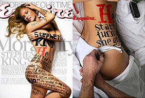

about the studioThink Banksy meets Tony Robbins
James Victore is an artist, designer, author, speaker, and teacher.
He runs an independent design studio in Brooklyn.
He sometimes gets to draw on supermodels.
His work is in the MoMA.
He rides motocross.
He speaks to audiences around the world.
He leads workshops + live events.
He teaches classes online.
He answers life’s questions on Youtube.
He gives really good Instagram + Twitter.
He loves his wife, Laura + his boy, Luca.
James Victore is an author, speaker, artist and firestarter who teaches creatives how to illuminate their individual gifts in order to achieve personal greatness. James speaks to audiences around the world about design and it’s place in the world. Widely known for his timely wisdom and impassioned views, Victore has been described as “Banksy meets Tony Robbins.” He reaches thousands online with his weekly Burning Questions video series and leads game-changing workshops and creation labs that help creative types of all spheres live and work successfully. At the helm of his independently run design studio, James continually strives to make work that is sexy, strong and memorable; work that tows the line between the sacred and the profane.
We are not for everybody. Just the sexy people.
James’ work has been exhibited at the Museum of Modern Art in New York and is represented in the permanent collections of museums worldwide. His clients include MailChimp, Adobe, Bobbi Brown Cosmetics, Moet & Chandon, Aveda, TIME Magazine, Yohji Yamamoto, Esquire Magazine and The New York Times. Awards include an Emmy for television animation, and Gold and Silver Medals from the New York Art Director’s Club. In 2010, his work was published in a monograph titled, Victore or, Who Died and Made You Boss? A star faculty member at the School of Visual Arts in NYC for 20 years, James retired from organized education in 2014 and now teaches his own classes and workshops through Victore Productions. He lives, loves and works in Brooklyn.
Chief Muse.
Laura Victore is a designer, blogger, healer, mystic and muse who helps creative professionals reconnect to their power by harnessing their individual Truths. She believes in Self-Mastery as a catalyst to promoting individual greatness and instigating massive world change.
Laura currently serves as Chief Muse of Victore Productions where she consistently seeks to maximize the studio’s capabilities and reach by bravely steering it into new directions including The Dinner Series, the Take This Job & Love It symposiums, and Burning Questions weekly video series.
Laura’s past graphic design and art direction clients include Isaac Mizrahi, Kate Spade, and Victoria’s Secret Beauty. In the Spring of 2013 Laura published her blog Sacred Sexy Muse dedicated to the empowerment of women. She lives in Brooklyn with her rockstar husband James.